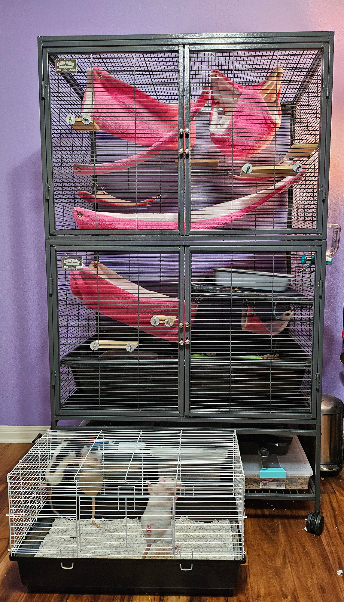
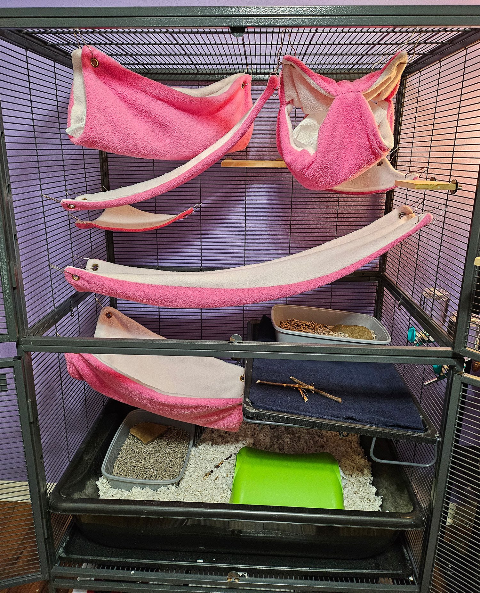

Basic Care Guide for Rats
How Many Rats?
Rats should always be kept in groups of at least two, because they are very social animals and will often become depressed when forced to live alone. I recommend keeping at least three, because if one rat wants to be alone the other will still have a buddy. When one rat dies, the remaining rats will still have a familiar companion. It would be incredibly stressful for both you and your rat to need to introduce a new rat while trying to grieve, so rats are best kept in groups of three are more.
Cage Requirements
Pet rats will live the majority of their lives inside of a cage, regardless of how often they are taken out to play, so it's crucial to provide a proper enclosure that meets all of their needs. A suitable rat cage is large enough to meet their exercises needs and contains enough toys and hides to provide mental enrichment. Rats are also notorious escape artists, so it's just as crucial to pick a sturdy, escape proof cage.
Ideal Cage Size
There aren't any definitive rules for cage size, but the most common recommendation for housing rats is at minimum 8 cubic feet for one to four rats, with 2-2.5 cubic feet added for each additional rat. The minimum size is a good starting point when shopping for cages, but remember that bigger is always better. In addition to volume, how the cage is proportioned is equally important. Many new owners make the mistake of prioritizing vertical space over horizontal, and while rats do like to climb they also need space to run, forage, and burrow. Any enclosure intended for rats should have at least 30in x 20in of horizontal space, and 20in of vertical space.
Keep in mind that many cages marketed towards rats are not suited for them, always look at the actual size before buying one. For example, the Kaytee brand's Rat Home, which is just over 2 cubic feet, barely leaves enough room for a rat to walk a few steps (as you can see in the below image). There's not enough room for a hide or hammock, certainly not enough space for a rat to get enough physical activity to be healthy.
If you want my opinion, the ideal size for a rat cage should be 24in x 36in x 47in (60cm x 90cm x 120cm) for two to four rats. That's nearly 24 cubic feet of space, and provides ample room to run and climb. With four rats in a cage that size, each one gets 6 cubic feet of space.
Best Type of Cage

Barred metal cages are the only type of cage suitable for a rat--the main reason being that a barred cage allows air movement, preventing an excessive buildup of dust and ammonia. Rats are very susceptible to contracting respiratory infections, and dust and ammonia tend to be the cause. Plus, barred cages allow rats to climb and provide places to hang hammocks, toys, and shelves for enrichment. Aquariums and plastic bins, though commonly used, are hazardous because of a lack of air flow and tend to be far too small.
Not all barred cages are appropriate for rats, however; cages intended for larger mammals like ferrets or chinchillas have large bar spacing that rats can usually sqeeze through. Anything above 1 inch is escapable by virtually all rats, and smaller females and pups can often escape gaps bigger than a half inch. A good rat cage typically has bar spacing of 1/4 or 1/2 of an inch. Rats are excellent climbers, so it doesn't matter if the bars are horizontal or vertical.
Cages with plastic bottoms are also best avoided. Rats can easily chew through plastic, though this isn't as likely if they are provided enough enrichment. I recommend getting a cage with a wire bottom and adding an acrylic, cardboard, or plastic pan for bedding on top. Never let rats walk on a wire bottom, as it can cause bumblefoot over time(a painful foot infection). The pan should be able to hold at least 2 inches of bedding, but rats love to dig so deeper is always better.
You should also consider how easy it is to clean the cage, as it needs to be done at least once a week (often more, depending on the size and how many rats you have). A cage that opens fully on one side is the much easier to clean than one with a small door (I know this from experience, if you can only fit your arm inside of a cage you're going to regret it).
Bedding Types
There are many types of bedding on the market, and each one has it's own benefits and drawbacks. I have personally used cloth, aspen, and paper based beddings myself, so many of these pros and cons are based on my own experience.
Pine & Cedar Shavings
Softwood shavings like pine and cedar are not suitable for any small animal, despite being incredibly common at pet stores. Softwoods contain an oil that's toxic to rats. It can cause respiratory infections when inhaled, and liver enlargement when absorbed through the skin.
Aspen Shavings
Aspen shavings are a very cost effective bedding material. In my experience, aspen contains odors better than any other bedding--even after a week without a cage cleaning. It's very absorbent, and the bedding never seems to stay wet. However, it's extremely dusty; even brands that claim to be 99% dust free contain an excessive amount of dust. You can use a mesh laundry bag to shake out dust, or just shake the bag so the dust settles at the bottom to limit the amount of dust your rat is exposed to. Many people use aspen with no problems, but excessive dust can contribute to a rat developing a chronic respiratory disease or make an existing illness worse. If you plan to use aspen bedding, I recommend the Kaytee brand. It had the least amount of dust out of the brands I tried (though it was still enough to make me sneeze when changing the bedding) and it was also in smaller pieces, which made it easier for my rats to dig.
Paper Based Bedding
Paper based beddings are more expensive and don't control odor as well, but they tend to contain very little dust. When it absorbs urine it stays wet, so it needs to be changed more frequently than other beddings (I change mine twice a week). Paper based beddings are also very soft and lightweight, making them ideal for rats to dig and burrow in. I personally use Oxbow's Pure Comfort Small Animal Bedding because it seems to have less dust and is softer than others.
Fleece & Cotton
Fleece is an incredibly common bedding for rats because its reusable, doesn't fray, and is soft. However, while being arguably the most cost efficient option, fleece is a terrible bedding for numerous reasons. The most glaring being the fact that it doesn't absorb liquid what-so-ever. Online, many people say fleece becomes absorbent after being wicked in hot water, but even after several washes urine would still sit bead up on the surface of the fleece blankets I used. Because of this, the blankets would also be wet constantly. The cage would also start to stink after half a day of replacing the bedding, and I would have to spend over an hour every one-two days washing and replacing the fleece.
I tried adding cotton towels because they're actually absorbent, but they were just as stinky and quickly became a hazard because, unlike fleece, cotton frays when chewed up and becomes a trap for unsuspecting feet. The only benefit of fabric bedding is that it contains no dust, but I would argue stinky, wet fabric is just as likely (if not moreso) to cause a respiratory disease. On top of all that, fabric beddings don't provide allow rats to forage and dig, which are important enrichment activies. Overall, fabric beddings are not worth the effort or money saved.
Enrichment Needs
Rats need a lot of enrichment both inside and outside of their cage to be happy. The inside of their cage should be cluttered things to climb on and toys to prevent boredom, and they should be taken out to play at least once a day. Expensive toys aren't necessary, most enrichment can be easily made at home.

Enrichment Ideas
- Hanging hammocks, rope bridges, seagrass mats, shelves, et c. provide a variety of places to climb and explore while also acting as fall breakers.
- Cardboard boxes, wooden or plastic hides, and tubes provide places for rats to feel safe.
- Exercise wheels help rats burn excess energy, but aren't necessary if ample cage space is provided. A wheel large enough for a rat is typically expensive, and many wheels can cause injury.
- Tissues, paper towels, scrap fabric, and packing paper let rats express natural nesting behavior, and provide an outlet for their destructive tendencies.
- Remove food bowls and scatter food around the cage to encourage foraging.
- Fill a deep box with bedding, shredded paper, or soft scraps of fabric so they can dig.
- Put peas in a bowl of water for your rats to fish out.s
Safe Playtime Outside
Rats need at minimum an hour of playtime outside of their cage a day, meaning the chosen room for freeroam time needs to be rat-proofed. Kitchens or bathrooms are good options because they typically lack cables, but any reachable drains need to be covered. For rooms with cables, either cover them with piping or block the area off. Cracks underneath doors need to be covered. House plants need to be removed from their reach because some are toxic. I personally build a fence out of cardboard and ducttape to make rat-proofing my room quick and easy. No matter how you choose to make your room safe, always keep an eye on your rats when they're outside of their cage. They are curious by nature and will take any and all opportunities to escape and cause trouble.
Dietary Requirements
As omnivores, rats need a variety of foods to meet their diety of needs. A high quality pellet intended for rats should be the primary food in their diet because it ensures they always get the necessary nutrients to thrive. That said, I also think rats should be given vegetables and fruits daily to provide more variety in their diet. When choosing a rat pellet, make sure it has a protein content no greater than 25% (preferably between 14% and 18%) and a fat content lower than 8%. Commercial foods containing a mix of pellets, seeds, and/or grains are not recommended because rats are often selective eaters and will only eat what they want (usually the bits that are high in fat or sugar), leading to malnurishment and obesity.
Click here for a list of safe and healthy foods for pet rats.
Additional Resources
These are resources I found helpful when first researching what pet rats need, and are a good starting point for your own research.
- Comprehensive guide to caring for pet rats: bluecross.com
- Ethical cage requirements and a list of suitable cages: animallama.com
- Safe and unsafe bedding materials: squeaksandnibbles.com
- The dangers of using wheels, and what makes a safe wheel: squeaksandnibbles.com